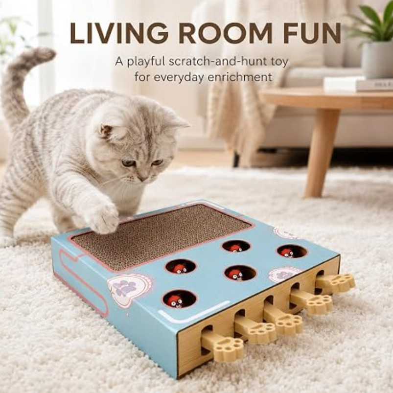
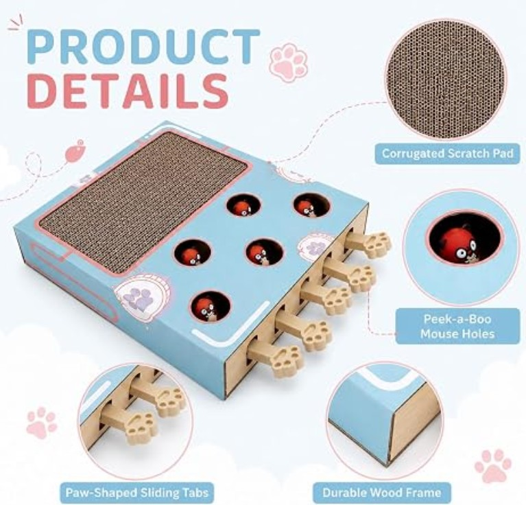
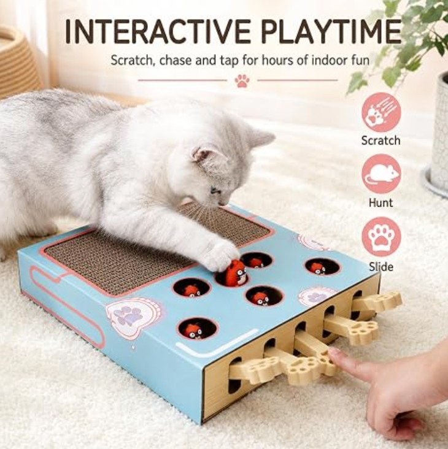

Om produkten
3-i-1 kattleksak med klösbräda – sysselsättning för lägenhetskatter: Denna interaktiva kattleksak kombinerar korrugerad klösbräda, Whack-a-Mole spel och interaktiva skjutreglage i en 3-i-1-design. Perfekt som kattleksak interaktiv för daglig aktivitet av boendekatter.
Denna multifunktionella kattklösbräda kombinerar tre funktioner i ett: en klösyta av wellpapp, en spelbräda med fem hål och en interaktiv spak. Lådan är tillverkad av ljusblått tryckt wellpapp med en stabil träram. Ytan är tryckt med söta ljusrosa tassar och en racerbana. Med sina kompakta mått på 36,3 cm (L) × 26 cm (B) × 6 cm (H) är den lämplig för olika rum som vardagsrum, sovrum och fönsterbrädor. Den uppfyller katternas olika behov efter repor, jakt och interaktiv lek och hjälper dem effektivt mot tristess, ångest och rörelsebrist.
Pris
399 kr
Produktinformation
- Färg: Ljusblå tryckt kartong ljusrosa tassavtryck/racingmönster + sidomam i massivt trä
- Material: Robust ytterhölje av kartong + förstärkt massiv träram
- Totala mått: 36.3 x 26 x 6 cm (L x B x H)
- Kantbearbetning: Rundade kanter utan vassa kanter, skonar kattens tassar